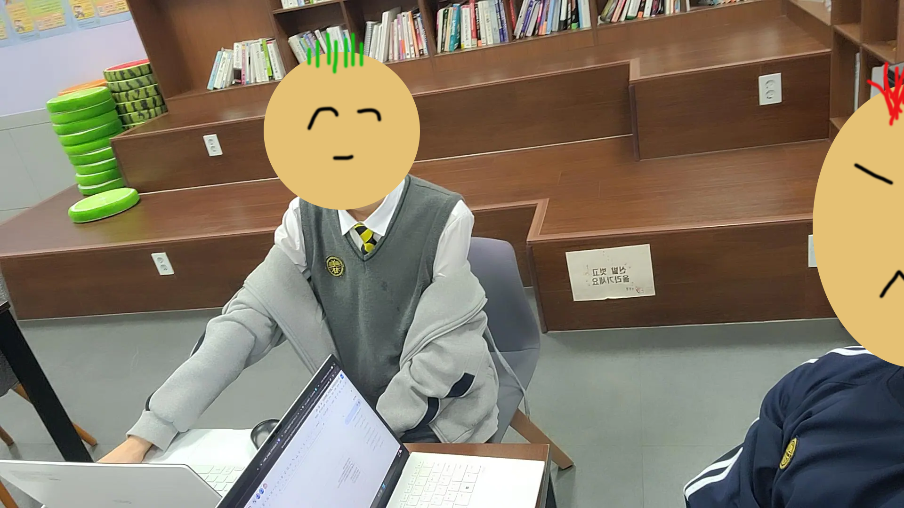

1. 조사 동기와 목적
조사 동기
우리 반 학생들이 AI를 더 잘 활용하도록 돕고자 조사를 계획했다.
조사 목적
학생들의 AI 활용 현황을 파악하고 효율적인 사용법을 제시하여, 학생들이 학습에 AI를 효과적으로 활용하도록 돕고자 조사를 진행했다.
2. 조사 계획
조사 기간
2025년 5월 15일
조사 대상
미림마이스터고 소프트웨어과 1학년 3반 학생 17명
조사 방법
설문조사, 인터뷰
3. 조사 결과
가. 설문 조사 결과
설문결과 1: AI 효과적 사용 인식
귀하는 인공지능(AI)을 효과적으로 사용하고 있다고 생각하십니까?
주목할 만한 내용: 응답자 17명 중 12명(70.6%)이 'AI를 효과적으로 사용하고 있다'고 생각한다. 부정적인 응답(1점, 2점)은 없었다.
설문결과 2: AI의 학습 및 과제 질 향상 기여도
AI 사용이 학습 및 과제 결과물의 '질'을 얼마나 향상시켜 준다고 생각하십니까?
주목할 만한 내용: 17명 중 12명(70.6%)이 AI가 과제 결과물의 질을 향상시켜 준다고 응답했다. 이는 학생들이 AI를 실질적인 도구로 사용하고 있음을 보여준다.
설문결과 3: AI 도구의 목적 달성 효율성
귀하께서 AI 도구를 사용하시는 목적을 달성하는 데 있어, AI가 얼마나 효율적이라고 느끼십니까?
주목할 만한 내용: '약간 향상된다'와 '매우 크게 향상된다'에 응답한 비율이 각각 41.2%로 동일하며, 합산 82.4%에 달한다. 이는 대부분의 응답자들이 AI 도구가 목적 달성에 실질적인 도움을 준다고 인식하고 있다는 강력한 신호이다.
나. 인터뷰 결과
인터뷰 인물: 노가우
주요 키워드: 도움, 대신, 편함, 과제
주목할 만한 내용: 생성형 AI가 자신의 생각을 표현해줄 때 대신 해주는 것이 편하고, 검색 및 자료 정리 시 AI에게 물어보면 바로 정리하여 보내주어 편리하다. 주로 AI는 과제할 때 사용한다.
다. 워드클라우드

인터뷰에서 추출된 주요 키워드를 시각화한 워드클라우드이다. '도움', '편함', '검색', '생각' 등의 단어가 두드러지게 나타났다.
4. 결론
가. 조사 결과 종합 및 주요 발견점
조사 결과, 학생들은 생성형 AI를 학습에 효과적으로 활용하고 있었다. 특히 정보 탐색, 과제 수행 시 효율성과 질 향상에 AI가 실질적인 도움을 준다고 다수의 학생이 응답했다. 인터뷰에서는 AI가 복잡한 표현을 대신하거나 자료를 빠르게 정리해주는 점이 편리하다는 의견이 많았다. 이는 AI가 학생들의 학습 부담을 줄이고 성과를 높이는 데 기여하고 있음을 보여준다.
나. 조사를 통해 새롭게 인식한 점
본 조사를 통해 AI가 단순 정보 제공을 넘어, 학생들의 생각 정리와 표현을 돕는 학습 파트너가 될 수 있음을 새롭게 인식했다. 또한, 명확한 프롬프트 입력이 AI 활용 효과를 결정짓는 중요한 요소이며, AI가 제공하는 정보에 대한 비판적 검토 자세가 필수적임을 확인했다.
다. 제언 및 우리의 다짐
이러한 점을 바탕으로, 우리는 AI를 단순 도구가 아닌 학습과 사고를 돕는 동반자로 인식한다. 앞으로 AI를 더 효과적으로 활용하기 위해 다음을 노력할 것이다.
- 명확한 프롬프트 작성 능력 향상: 원하는 결과를 얻기 위해 구체적이고 전략적인 프롬프트 사용법을 익히고 공유한다.
- AI 정보의 비판적 수용 태도 강화: AI가 제공하는 정보의 사실 여부를 항상 확인하고, 균형 잡힌 시각으로 정보를 활용한다.
- AI를 활용한 창의적 학습 활동 확대: AI를 아이디어 발상, 문제 해결 등 창의적이고 심층적인 학습에 적극 활용하여 사고력을 확장한다.
이러한 노력을 통해 AI를 주체적으로 활용하여 미래 사회에 필요한 역량을 갖춘 인재로 성장할 것을 다짐한다.